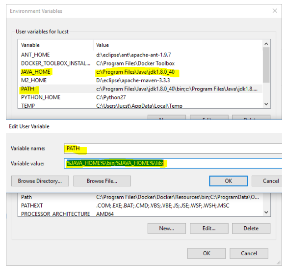
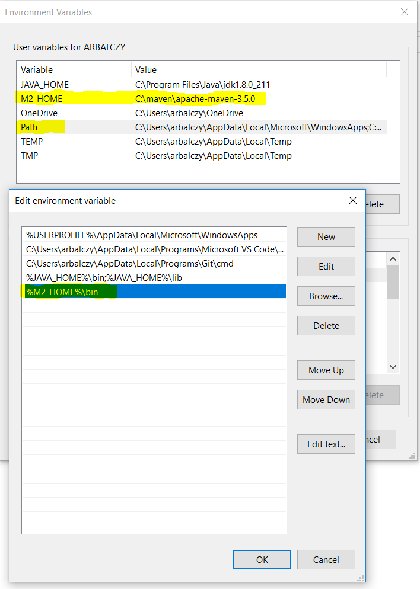
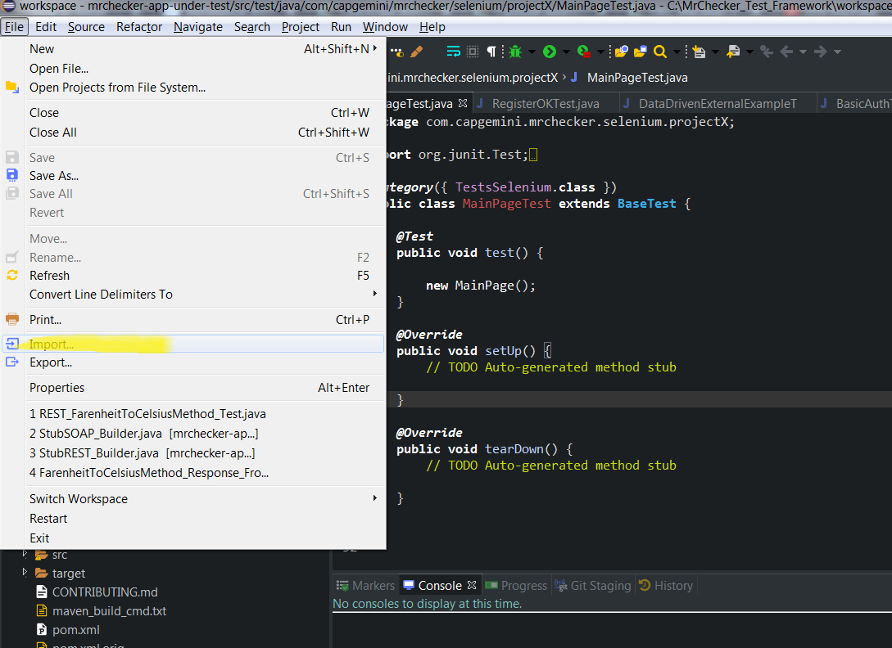
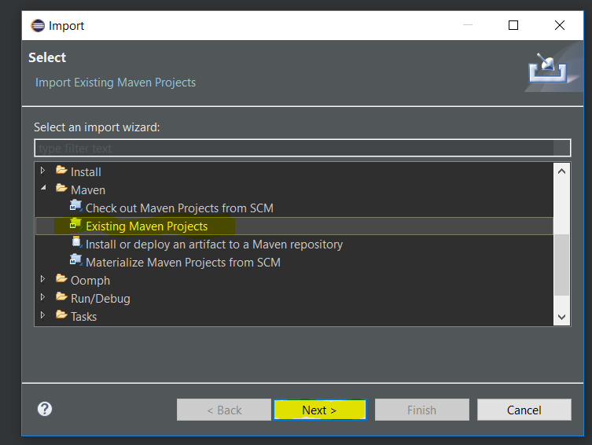
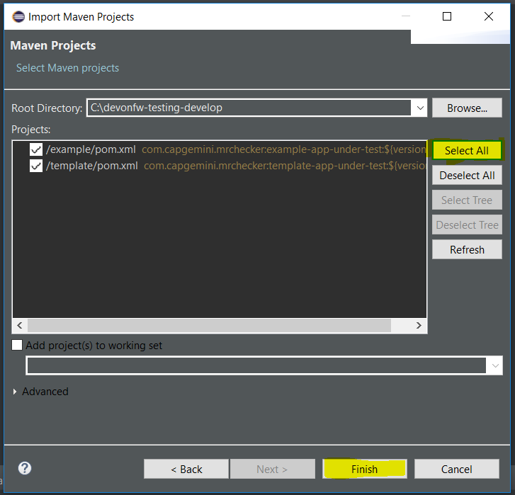
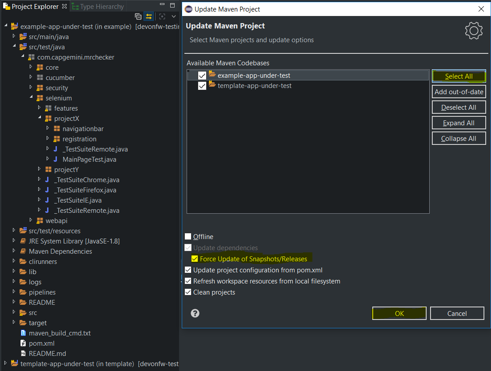

Java installation
There is one important pre-requisite for Mr Checker installation - Java has to be installed on the computer and an environmental variable has to be set in order to obtain optimal functioning of the framework.
-
Install Java 1.8 JDK 64bit
Download and install Java download link
(To download JDK 8 from Oracle you have to have an account. It is recommended to get a JDK build based on OpenJDK from AdoptOpenJDK)
-
Windows Local Environment - How to set:
-
Variable name: JAVA_HOME | Variable value: C:\Where_You’ve_Installed_Java
-
Variable name: PATH | Variable value: %JAVA_HOME%\bin;%JAVA_HOME%\lib

-
-
Next, verify it in the command line:
> java --version
Other components installation
Install each component separately, or update the existing ones on your PC.
-
Maven 3.5
-
Unzip Maven in following location C:\maven
-
Set Windows Local Environment
-
Variable name: M2_HOME | Variable value: C:\maven\apache-maven-3.5.0
-
Variable name: PATH | Variable value: %M2_HOME%\bin

-
-
Verify it in the command line:
> mvn --version
-
IDE
-
Download a most recent Eclipse
-
Download a MrChecker Project https://downgit.github.io//home?url=https://github.com/devonfw/mrchecker/tree/develop/template[Template] to start a new project or Mrchecker Project https://downgit.github.io//home?url=https://github.com/devonfw/mrchecker/tree/develop/example[Example] to get better understanding what we are capable of.
-
You should consider installing some usefull plugins such as: csvedit, cucumber editor.
-
Import:
 -
Projects from folders
 -
Open already created projects:
 -
Update project structure - ALT + F5

-